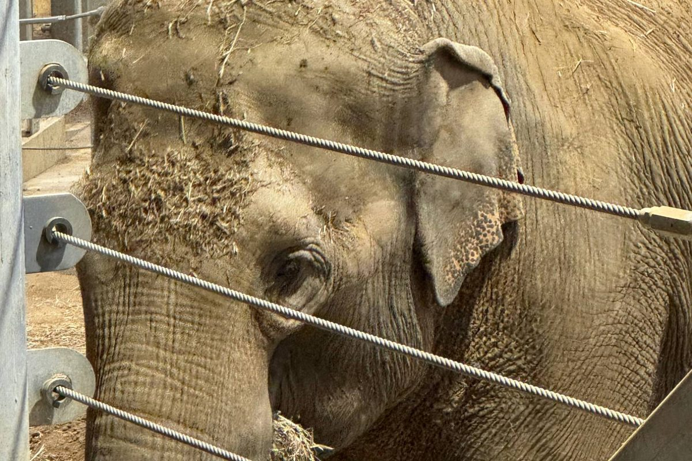

Accessible Ohio: the Cincinnati Zoo
Cassidy Travel, independent travel advisor of Fora Travel. Checked October 2026; confirm before you go.

The Cincinnati Zoo & Botanical Garden is about 45 minutes from Waynesville, and its Zoo Access for All program is one of the most complete I've found at any attraction. This guide is for families with a wheelchair or scooter user, a child or adult with sensory needs or autism, a service dog, or a medical routine to work around.
It covers parking and the entrance, getting around, sensory supports, restrooms and medical needs, service animals, touch points for blind and low-vision visitors, and what to ask before you go. It's what I'd tell a friend, based on the Zoo's own accessibility page, not a promise that every path is perfect.
Parking
Go to the Vine Lot (Lot A), 3427 Vine Street. It has 20 dedicated accessible spaces, and it's the lot the Zoo sends everyone with a placard to; the Erkenbrecher and Dury lots direct you back to Vine.
- Placard holders are always let into the Vine Lot, even when it's full for everyone else. Keep your placard visible to the attendants as you pull in.
- The 20 accessible spaces themselves fill up fast, especially on weekends and during special events. Arrive early, or plan a weekday visit, if you want one of them.
- Need a rental wheelchair or ECV to get from the car to the gate? Tell a parking attendant and they'll help you get one. The Zoo says availability isn't guaranteed, so reserve online ahead if you can.
The Zoo's parking map (opens in a new tab) shows all the lots.
The entrance
From my own visits:
- The path to the entrance is paved, and there's an elevator up to the walkway that leads to it, so you don't need the stairs.
- The gate is open, with no turnstile or barrier, so wheelchairs and scooters roll straight through.
- Staff scan your ticket or pass at the gate. Have it ready on your phone or printed so you're not digging for it in the line.
Getting around: plan for hills
The Zoo is one of the oldest in the country and was built on a hill, so expect inclines. There are benches and rest areas throughout, and any employee can point you to the less steep paths. Ask at the start, not halfway up.
Rentals are at the Welcome Center in Historic Vine Street Village, first come, first served:
- Manual wheelchairs, up to 350 lbs.
- Electric scooters (ECVs), up to 450 lbs. You must be 18 or older to rent or drive one.
- Single and double strollers.
A limited number can be reserved online at least 24 hours ahead. If online shows sold out, arrive as early as you can.
Your own wheelchair or scooter is welcome. Golf carts, other oversized mobility devices and rental e-scooters aren't allowed. A Segway used for a disability is permitted at walking speed, but not in the animal encounter areas.
Sensory needs, autism and developmental disabilities
The Zoo has worked with Cincinnati Children's Hospital since 2017 to become more welcoming for visitors with developmental disabilities, and many staff have been trained by Children's LEND program. What that means on the ground:
- Sensory bags to borrow at the Welcome Center: chewy tubes, fidgets, noise-canceling headphones and sunglasses.
- Two calming rooms, in Vine Street Village and Mai Thai's Market, with dimmable lights, a rocking chair, a crash pad, a bubble wall and a weighted lap pad. They're locked and hold one family at a time. Ask any employee, stop at the Welcome Center, or call Visitor Experience at 513-475-6198, and someone will meet you and let you in.
- Six calm spaces around the Zoo in total, for when a calming room is in use.
- Sensory maps, sensory-friendly restrooms and visual supports.
- Social narratives you can read together before the visit: going to the Zoo, Roo Valley, giraffe feeding, the cheetah encounter, and the PNC Festival of Lights.
If your child does better knowing exactly what will happen, the social narratives are the single most useful thing on the Zoo's website. Read them a few days ahead, not in the car.
Restrooms, food and medical needs
- Adult-size changing tables are in the family restrooms in Vine Street Village.
- Bring your own food. Outside food, drinks and coolers are allowed; glass and alcohol aren't. Base Camp Café is open daily. The Zoo is careful with allergies but warns that cross-contamination is possible.
- No refrigeration. If medicine or food has to stay cold, bring a cooler. The Visitor Experience team may store medical equipment or a cooler case by case; email them at least two days before your visit to arrange it.
- Cups of water are free at any open dining spot. The water fountains are turned off in winter.
Service animals
Service animals are welcome under the ADA. Emotional support and therapy animals aren't. A supervisor will check you in at the entrance and give you a Service Animal Map.
Some areas are off limits to service animals to protect the Zoo's animals, including the animal contact areas (goat yard, tortoise yard, Roo Valley, giraffe feeding), the aviaries, Jungle Trails, Gorilla World and the Cheetah Encounter. You can still visit them without your dog: call Visitor Experience at 513-475-6198 to arrange it. A few more areas, such as Cat Canyon and Wolf Woods, are marked "sensitive" on the map; keep an eye on your dog there.
For blind and low-vision visitors
Tactile statues and casts are spread through the Zoo: a baby elephant outside the Elephant House, gorilla hand and foot casts at Gorilla World, a manatee bench at Manatee Springs, and metal birds at Wings of Wonder that play their call when you touch them. Some are a step off the path, so go carefully.
What the Zoo's page doesn't cover
I couldn't find whether companions or caregivers get a ticket discount. If that matters for your visit, call Visitor Experience before you go, or ask me to check for you.
My take
For a family with a wheelchair user, rent or bring a power chair or scooter if you can; the hills are the real challenge here. For a child with sensory needs, this is one of the best-prepared attractions in the region. Read the social narratives together, borrow a sensory bag at the Welcome Center, and know where the calming rooms are before you need them.
Official pages: Zoo Access for All (opens in a new tab). More guides like this: Accessibility guides.
Planning a trip like this? There's no planning fee for vacations.